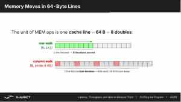

07-12 下午：性能分析技术基础（Profiling）
性能工具给出的是迹象，不是结论。一个热点的高 cache miss、低 IPC 或长时间等待，必须回到循环访问、线程分工和数据位置解释；优化后的同一组测量再决定假设是否成立。
性能测量
性能数据必须有问题定义。要比较两个版本，至少固定输入规模、数据类型、编译器和优化选项、线程数、CPU 绑核、NUMA 策略、是否包含初始化/I/O。首次运行可能受动态链接、页面分配、缓存预热影响，因此应多次测量，报告中位数/分布，而不是只挑一次最好结果。
运行时间的构成
单周期 CPU 里，每个指令都是固定的一周期，性能很好算：指令数 × 时钟周期。现代处理器不讲这套，但理解性能仍是在回答同一类问题。一个程序消耗的（处理器）时间大致可以拆成：
其中 CPI（cycles per instruction）是平均每一条指令花几个时钟周期——理想流水线接近 1，但 cache miss、分支预测错误、依赖等待都会让它远大于 1。反过来看 IPC（instructions per cycle）= \(1/\text{CPI}\)，表示每个时钟完成几条指令。
所以当你看到 perf stat 里 IPC = 0.65，意思是每个时钟平均只完成 0.65 条指令——处理器有大量周期在等待（多半是等内存或等依赖），而不是在算。等内存往往表现为 cache-misses 高、stalled cycles 高。读这些数字的顺序是：先看总时间，再拆出指令数与 CPI，再用 cache/分支事件定位等待具体等在哪。
平均值掩盖尾部延迟
并行作业结束要等最慢的 rank，服务请求也常由最慢的一次决定。除平均耗时外，保留中位数、最小/最大值或分位数；一次异常慢是系统噪声、负载不均还是同步阻塞，要从 profiler 的时间线 trace 里看各 rank/线程的等待出现在哪个阶段才能判断。
最基本的度量是 wall-clock time，即用户实际上等待了多久。C++ 可用 std::chrono::steady_clock，C 可用 clock_gettime。计时区间应只包住要比较的核心工作；把随机初始化、打印和文件读取混在一起，无法判断优化改到了哪里。
auto begin = std::chrono::steady_clock::now();
kernel(a, b, c, n);
auto end = std::chrono::steady_clock::now();
double seconds = std::chrono::duration<double>(end - begin).count();对矩阵乘法，常把工作量写作约 \(2N^3\) FLOP（一次乘加计为两次浮点操作），于是：
这个数方便和机器能力比较，但前提是算法确实做了这些运算、结果没有被编译器优化掉，并且数值结果通过校验。
测性能前要分清两组单位。
- 延迟用
s、ms、cycles，回答一次要多等多长时间； - 吞吐用
op/s、FLOP/s、B/s，回答单位时间能做多少。
延迟由依赖链和串行等待决定，吞吐受并行宽度和资源上限决定。这里有一句很贴切的玩笑——“永远不要低估一辆装满磁带、在高速公路上狂奔的面包车的带宽”（Andrew Tanenbaum）🚐💨。它想说的是，一次运送大量数据时，总吞吐可以非常可观，但逐次往返的延迟依然糟糕。现实中 AWS Snowball、阿里云闪电立方这类“卡车搬迁数据”的服务，正是把这个思路用到了极致。
so，高带宽不等于低延迟。小消息同步受延迟支配，大块搬运受带宽限制。
性能上限与 Roofline
CPU 的计算峰值由核心数、频率、每周期可发射的向量 FMA 数量和向量宽度决定；内存系统则有单个 socket、全部 socket 和不同访问模式下的带宽上限。用 microbenchmark 测这些上限，比直接引用产品宣传页更可信。
程序实际性能受两条上界限制：计算峰值和内存带宽。定义运算强度：
则 Roofline 近似给出：
若点落在带宽斜线附近，继续增加算术单元或手写 FMA 的收益有限；应减少 DRAM 流量、提高缓存复用。若点接近水平计算屋顶，才说明算术吞吐和指令调度值得重点看。
Roofline 还提醒我们区分第三种状态：程序既没有饱和带宽，也离计算屋顶很远，可能是并发度不足、依赖链太长或延迟没有被隐藏。Roofline 的作用是给下一步实验提出可检验的假设，而不是给程序贴上内存型/计算型的静态标签。
{kind=link}
图：斜线是带宽上限，水平线是计算峰值；落在两条屋顶下方很远的点还受并发度、依赖或控制流限制。
几个实际 kernel 可以放回同一把尺子上：向量加、点积和 stencil 靠近带宽斜线，优化后的 GEMM 靠近计算屋顶。图中每个点都是测量值，Roofline 的用途正是让这个版本快了变成可检验的判断：它是少搬了数据、提升了运算强度，还是只是离机器上限还很远。
{kind=link}
图：同一台机器上，不同算子的性能上限由不同资源决定。
以逐元素 c[i] = a[i] + b[i] 为例，float 数据每个元素至少读入 8 字节、写出 4 字节，只做一次加法，运算强度约为 \(1/12\) FLOP/byte。即使 CPU 有很高的 FMA 峰值，这个循环也会很快碰到内存带宽屋顶。矩阵乘法则不同，一个读入 cache 的 A 或 B 元素会参与许多次乘加，随着 tile 增大，DRAM 上看到的字节数增长得远慢于 FLOP，点才可能向右移动。
这也解释了同一段代码换更强 CPU 为何不一定快。如果新 CPU 的计算峰值翻倍、内存带宽几乎不变，带宽受限的点仍停在原来的斜线上；若优化把连续数组改成多次扫描，FLOP 数不变，字节数却增加，点会向左走。Roofline 不是在给程序贴标签，它要求每一次优化说清楚减少了什么搬运，或增加了哪一块数据的复用。
CPU 利用率与热点
CPU 利用率低可能是 I/O、网络、锁、页面缺失或负载不均；CPU 利用率高也可能只是忙于做无用工作。需要同时看热点、调用栈和硬件计数器。
Linux 上可先用：
perf stat ./matmul 4096
perf record -g ./matmul 4096
perf reportperf stat 可看到 cycles、instructions、IPC、cache misses 等总体计数；perf record 采样调用栈，定位时间主要在哪个函数/哪行循环。Intel 平台的 VTune、LIKWID/perfctr、AMD 的工具也能提供更细粒度的事件和时间线。工具的读数是证据，不是自动结论：高 cache miss 要结合数据规模和时间占比解释。
perf stat 中的 IPC 是 instructions / cycles。IPC 很低时，处理器可能在等内存，也可能在等长依赖、频繁分支或锁；IPC 很高也不代表程序快，简单的带宽扫描同样可以很高效地发射指令却受 DRAM 限制。cache miss 的绝对次数也要除以访问次数和运行时间看。一个处理几十 GB 数据的程序有很多 LLC miss 很正常；小工作集却频繁 miss，才更值得回到访问模式排查。
朴素 GEMM 的 perf stat 给出一个具体的数字：IPC 约 0.65，而那颗核每周期能发射 6 条指令，0.65/6 远不到一半——执行单元多数周期在等待，等的是内存把 B 送过来。解释 IPC 时要结合核的发射宽度，否则 0.65 本身说明不了什么；看到核在等待，再进一步查它在等什么。
现代核是乱序、超标量的结构：指令从前端取指、解码后进入重排序缓冲和调度器，硬件打破程序顺序、把能并行执行的指令分派给不同的执行端口，再从内存子系统取回数据。指令顺序和实际执行顺序不一致，正是 IPC 能超过 1、又可能在某个环节空等的原因。
{kind=link}
图：核硬件按端口宽度并行执行指令；IPC 低于发射宽度，说明调度器与执行端口之间有空闲周期。
perf record -g 的火焰图或调用树回答的是时间落在哪条调用路径。它不等于那一行指令一定最慢：一个函数自身占时高，可能是在算，也可能是它里面的 load stall、锁或系统调用没有在符号层细分。先用采样找到区域，再针对该区域取硬件计数或读汇编，范围会小很多。
工具按问题分工。
| 命令 | 回答的问题 | 典型输出 |
|---|---|---|
perf stat |
整段运行时硬件做了多少工作 | cycles、instructions、cache 事件、运行时间 |
perf record -g |
时间主要落在哪条调用路径 | 带调用栈的采样数据 |
perf report / annotate |
热点对应哪个函数或哪段指令 | 符号、源码或汇编占比 |
perf top |
正在运行的系统此刻忙在哪里 | 实时热点列表 |
先用轻量的 perf 缩小范围，再在需要缓存、NUMA、流水线 slot 等细节时进入 VTune 一类工具，读数通常更容易解释。
{kind=link}
图：计数器先描述整段运行。只有把它与采样到的热点和源码访问模式对应，才能区分内存、分支、依赖或锁等待。
{kind=link}
图：先 stat 看整体计数器，再 record+report 采样定位热点源码，最后 top 看实时分布——这是基本流程。
朴素矩阵乘法
对行主序 C/C++ 数组，最直观的三重循环可能是：
for (int i = 0; i < n; ++i)
for (int j = 0; j < n; ++j)
for (int k = 0; k < n; ++k)
c[i][j] += a[i][k] * b[k][j];a[i][k] 沿行连续，但 b[k][j] 固定 j、变动 k，是在按列跳跃访问 B。B 很大时，每一步可能碰到新的 cache line；数据从 DRAM 反复搬运，算术单元在等内存。
先换循环次序，常可让内层连续扫描 B 的行：
for (int i = 0; i < n; ++i)
for (int k = 0; k < n; ++k) {
double aik = a[i][k];
for (int j = 0; j < n; ++j)
c[i][j] += aik * b[k][j];
}这一步未改变数学算法，却改变了访存模式。它往往比一开始写 SIMD 指令带来更大的收益。
三重循环总共只有六种次序，按最内层到底在流式读什么可以分成三类，实测性能相差一个数量级。
| 内层循环 | 内层实际流式读 | 次序 | GFLOP/s |
|---|---|---|---|
k |
B 的列（跳跃） | ijk / jik |
0.54 / 0.50 |
i |
A 的列 + C 的列 | jki / kji |
0.26 / 0.26 |
j |
都不跳跃（B、C 按行） | ikj / kij |
4.00 / 3.98 |
同一个算法、同样的 -O2，哪种循环次序决定了能不能让内层访问连续。三层循环的排列一共有 \(3!=6\) 种，真正值得用的是让内层连续扫 B 的 ikj/kij。
这背后是 64 字节 cache line 的物理含义。一次内存读取以 64 B（8 个 double）为单位搬入 cache：ikj 让内层沿 B 的行连续走，取到一条 line 就能服务 8 次迭代的乘加；反过来若内层扫 B 的列，每次迭代只用到 line 里 8 字节、其余 56 字节被丢弃。行 walk 与列 walk 的差别，就是一条 line 服务 8 次和每条 line 只服务一次的区别。
{kind=link}
图：一次内存访问搬入 64B（8 个 double）；行方向能被整条 line 覆盖，列方向则每条 line 大多浪费。
改动前后可以用 perf stat 直接对照。naive(ijk) 与 ikj（都是 -O2）指令数几乎相同（约 75 亿条），cycles 却从约 117 亿降到约 14 亿，IPC 从 0.65 升到 5.37，cache-references 也从约 9.7 亿降到约 1.4 亿。同样的指令、少得多的等待，就是访问模式改变带来的。
Cache blocking
即使循环顺序改善，整个矩阵仍可能远大于 cache。分块（blocking）把矩阵切成 BS×BS 的 tile：一次只处理几个能放进 cache 的小块，在块内反复使用 A、B、C 数据。
for (int ii = 0; ii < n; ii += BS)
for (int kk = 0; kk < n; kk += BS)
for (int jj = 0; jj < n; jj += BS)
for (int i = ii; i < std::min(ii + BS, n); ++i)
for (int k = kk; k < std::min(kk + BS, n); ++k) {
double aik = a[i][k];
for (int j = jj; j < std::min(jj + BS, n); ++j)
c[i][j] += aik * b[k][j];
}块大小不是凭空定一个常数。它要考虑 L1/L2/L3 容量、元素大小、线程数和关联度；不同层甚至需要不同块大小。先用少量候选尺寸测量，再决定是否值得进一步微调。成熟 GEMM 库会做多级 blocking、packing 和寄存器分块，因此生产代码通常应直接使用 BLAS。
{kind=link}
图：分块让三个子块（A、B、C 的 tile）在一轮 k 循环内驻留 cache，最大限度复用已搬入的数据。
分块尺寸可以按各层 cache 的容量推，约束是三块数据（A、B、C 的子块）同时驻留。L1d（约 48 KB）决定 micro-panel 的大小，让 nr×BS 的 B 小块留在 L1；L2（约 2 MB）要求 3·BS²·8 ≤ L2，一个 C 大块、一块 A、一块 B 共约 3 个 BS×BS 的双精度 tile；L3（约 45 MB/socket）容纳 packed B 的面板。按这个推算，BS≈288 量级。
blocking 换来的主要是更少的 DRAM 流量，而不是更少的指令。不阻塞时，B 的每个元素会被提取 N 次；分块后，B 的一个 line 在离开 cache 前会被整块工作消费完，B 的搬运量下降约 N/BS 倍。真正的代价看 B 矩阵能否塞进 L3，可以先用算术估算：B 是 \(N\times N\)、双精度，占 \(8N^2\) 字节；若 \(8N^2\) 小于 L3 容量，blocking 收益有限，若超过则明显。
{kind=link}
图：区别在于数据在再次被使用前是否已被逐出 cache；分块让工作子块驻留到被完整消费。
| N | B 矩阵(\(8N^2\)) | 是否进 L3 | ikj | blocked |
|---|---|---|---|---|
| 2048 | 33 MB | 能装下 | 3.98 | 3.71 |
| 3072 | 75 MB | 溢出 | 2.65 | 3.72 |
| 4096 | 134 MB | 严重溢出 | 2.28 | 3.57 |
{kind=link}
图：一张表说明分块是否值得可由 \(8N^2\) 与 L3 容量直接预判，不必等跑完再猜。
B 未溢出 L3 时，blocking 反而略慢（2048 时为 3.71 对 3.98）；B 一超过 L3，ikj 因反复搬运 B 而降到 2.65、2.28，blocked 靠块内复用维持在 3.7 左右。分块是否值得取决于工作集能否放进对应层级，$8N^2$ 这个数在运行前就能判断。
packing 是把原矩阵的一块复制到按微内核访问顺序连续的缓冲区。它增加了一次复制，却能让后续内层循环连续 load，避免跨大步长和复杂边界判断。矩阵足够大、同一 packed 块被反复使用时，复制成本会被摊薄；很小的矩阵或只用一次的块，则可能得不偿失。许多高性能库把这层细节藏起来，理解它能帮助阅读 profiler：看到额外的 copy 函数，不应立刻把它当作无用开销。
一条完整的优化轨迹也能说明先后次序：仅仅改循环顺序已得到约 7.6x，cache blocking 再得到约 1.6x；自动向量化、手写微内核和多核并行是在此基础上继续提高。访问布局要先于指令级微调，因为布局决定数据是否能被 cache 和带宽系统有效供给。
为什么先改布局是有因果关系的顺序
一条 AVX-512 指令能在一个周期做很多 FMA，但再宽的计算单元也要先把数据从 DRAM 一路搬到寄存器。若程序本身在每个内层迭代都跨大步长访问，访存路径先被浪费掉，给再多的算术 lane 也没有用。先改循环次序/分块，是让已搬上来的数据被尽量复用；只有这一步之后，自动向量化和手写微内核才有足够多的局部数据可算。这不是规定动作的先后顺序，而是瓶颈决定优化点的自然结果。
自动向量化与查看生成代码
当最内层循环连续、迭代独立、指针别名清楚时，编译器可把多个 j 合并成 SIMD 操作。对 Clang：
clang++ -O3 -march=native -Rpass=loop-vectorize matmul.cpp关闭优化或向量化，再比较生成汇编和运行时间，可以看到优化是否真的发生。不要只因报告写 vectorized 就宣布成功：如果总程序仍被 DRAM 限制，向量化后的速度提升会受带宽约束。
四个构建组合（N=1024）能分开布局与编译器各自的贡献：
| 版本 | 访问模式 | 编译器设置 | GFLOP/s |
|---|---|---|---|
| naive (ijk) | 跨大步长 | -O3 开自动向量化 |
0.52 |
| ikj | 流式连续 | -O1 关自动向量化 |
3.66 |
| ikj | 流式连续 | -O3 开自动向量化 |
7.16 |
| ikj + OpenMP(48T) | 流式连续 | -O3 |
160 |
布局让 0.52 → 3.66，编译器自动向量化再让 3.66 → 7.16，多核并行最后拉到 160。这里布局带来的约 7× 比编译器带来的约 2× 大得多，所以优先级通常是布布局 → 并行 → 自动向量化 → 手写 intrinsic。
自动向量化也有天花板。从端口依赖推算：内层每步要做 load B、load C、FMA、store C，若内存端口每周期约 3 个、FMA 有 2 个 port，则 FMA:mem 比例约为 0.67，一个周期做不满 1 条 FMA；即使换成更宽的向量，内存端口不够也加不出并行度。把一段 C 留在寄存器里，让每个字节喂给更多 FMA，才是把这个比例拉高、逼近单核屋顶的办法。
进一步的寄存器分块会让多个结果累加器长期留在寄存器中，减少 load/store；同时要匹配 load 单元、store 单元和 FMA 单元的吞吐。寄存器过多会 spill 到内存，反而变慢。这里已经接近微内核优化，通常由 BLAS 库完成。
AVX-512 微内核
微内核不是简单地把内层 j 循环换成一条 AVX 指令。示例让一组 ZMM 寄存器保存一个 \(4\times16\) 的 C tile；每轮从 packed B 读两个向量，把 A 的若干标量广播后做 FMA。C 在寄存器里跨多次 K 维迭代累加，最后才写回内存，减少了反复读写 C 的成本。
这解释了为什么手写 SIMD 需要理解 tile、packing 和寄存器预算，也解释了为什么简单场景优先调用 BLAS。微内核优化只应在 profiler 已证明 GEMM 是主要热点、库接口又无法满足布局或融合需求时才进入。
{kind=link}
图：C 的小块留在寄存器中沿 K 维累加，packed B 连续加载，A 的标量广播到向量 lane；最后统一写回。
多线程与内存流量
OpenMP 并行矩阵乘法时，若不同线程负责不同的 C tile，每个线程主要写自己的结果，正确性和缓存行为都较好：
#pragma omp parallel for schedule(static)
for (int ii = 0; ii < n; ii += BS) {
// 一个线程处理若干行块/结果 tile
}若按 K 维切分，每线程可独立读取 A、B 的部分，但多个线程会累加同一个 C tile，需要 reduction、锁或额外缓冲区；同步与额外写回会抵消收益。如何切分不能只看计算量是否均分，还要看哪些数据被共享、是否会争带宽、是否能复用共享 L3。
线程数增加到某一点后，内存带宽先饱和，之后更多线程只是在竞争。此时 GFLOP/s 不再随线程数增长是正常现象，不是 OpenMP 写错。
多核扩展的实测能看出明显的边际：同一微内核，1 线程约 54 GFLOP/s、12 线程约 592、24 线程约 969、48 线程约 1729，再到 96 线程反而降到约 707——更多线程不一定更快，超出一颗 socket 的合理并发后只增加调度和带宽争用。
线程多了还会暴露负载不均衡与同步等待。一个例子是把 3136 行切成 49 个行条块分给 48 个线程，总量看似整除不了，结果 47 个线程约 710 ms 就做完，剩下一个线程要同时做两块（约 1173 ms），其余线程在 barrier 上空等，整个机器约 39% 的时间闲置。把切分粒度细到按行之后，所有线程都约 710 ms 完成，闲置降到约 13%，墙钟时间从 1173 ms 降到 819 ms。这类问题用 wall-clock 看不出来——perf/VTune 看到的是时间片里大段 Inactive Sync Wait。有的实况里 32 线程的程序光是自旋等待就占了大半 CPU 时间，所以并行程序的 profiler 读数经常显示利用率并不像墙钟时间那么理想。
NUMA 的测量与绑定
双路服务器的每个 socket 邻近自己的 DRAM。若线程运行在 socket 0、数据页却首次触碰于 socket 1，就会发生 remote access。性能分析中可分别测试本地分配、本地访问和远端访问，观察延迟/带宽差异。
常见策略是让每个线程初始化自己将处理的数组块；并在必要时将线程和内存绑定到同一 NUMA 节点。可以用：
numactl --hardware
numactl --cpunodebind=0 --membind=0 ./program
numastat -p PID绑定不应变成默认迷信。若任务本身需要跨 socket 共享数据，或调度环境已做了合理绑定，手工绑定未必更快；仍需测量。
实测把 24 个线程固定在 socket 0 后，访问本地内存约为 42.7 GFLOP/s、平均加载延迟约 230 cycles；把内存强制分配在远端节点后，性能约为 31.9 GFLOP/s、延迟约 335 cycles。数值随机器改变，但本地性带来的方向性差异正是 NUMA 绑定要验证的东西。
{kind=link}
图：固定线程位置后只改变页面位置，远端加载延迟上升、吞吐下降；具体数值只代表课件所测机器。
NUMA 要分清三个位置
测 NUMA 时要区分线程在哪个 socket、页面在哪个 socket、以及线程实际访问哪块页面。只把进程绑到 node 0、却由 node 1 的线程先初始化数组，仍可能得到远端页面。可先让每个线程并行初始化自己后续处理的块，再保持相同的线程划分进入主循环；改变一个条件后重跑，才能把差异归因于数据位置而不是随机波动。
计时边界与统计量
测量一个 kernel 时，计时器应夹住同一份工作：必要的预热之后开始计时，结束时确保 CPU 线程或 GPU stream 已完成，再读取时钟。把随机数据生成、首次页分配、JIT 编译或文件加载有选择地计入，会改变问题本身；报告必须写清边界。CPU 可用单调时钟，MPI 程序通常取所有 rank 中的最大耗时，因为作业完成由最慢 rank 决定；GPU 异步发射时应使用 CUDA event 或显式同步，不能只量 host 提交 kernel 的微小时间。
单次运行容易受频率调节、后台负载、首次 cache cold start 和系统噪声影响。对相同输入运行多次，报告中位数或稳定区间，同时保存最小/最大值和线程绑定信息，才能判断一个 3% 的改动是否真实。优化中若校验被移出计时区，仍应在每次候选实现后运行；少做了计算得到的加速不是性能结果。
从事件到循环
perf stat 的 IPC 是 retired instructions / cycles，不是 CPU 利用率。IPC 低可能来自 cache miss、分支错误、数据依赖或前端取指受限；IPC 高也可能只是在高效执行不重要的初始化。cache-misses 需要和访问次数、cache line 大小、运行时间一起解释。把计数器与采样 profiler 的热点函数、源码行和汇编对应，才能提出可证伪的假设：例如热点在 B[k*n+j] 且 LLC miss 高，才有理由尝试转置或 packing；改完再测同一事件集和总时间。
性能上限也可由实际字节流量反查。若一个 SAXPY 每元素读 x、读写 y，理想情况下约搬运 12 字节并做 2 FLOP，运算强度约为 1/6 FLOP/byte；在 200 GB/s 的有效带宽下，即使峰值算力是数 TFLOPS，Roofline 上限也只有约 33 GFLOPS。这个估算的价值在于排除不可能：当实测已接近该数，不应期待把 FMA 再调快十倍。
perf/VTune 用于热点和硬件事件；火焰图把调用栈占比可视化；trace/timeline 用于观察线程、MPI、GPU 和 I/O 的等待关系；微基准用于测机器上限；程序内计时用于标记算法阶段。一次优化只改一个假设，并保存版本、命令、输入、结果和正确性校验。
性能优化的顺序可以概括为：先确认热点和上限；先改善算法与访问模式；再做 cache blocking；再启用编译器优化和向量化；再并行、绑核；最后才写针对某一指令集的微内核。这个顺序并非教条，但能避免把时间花在不影响总运行时间的细节上。
{kind=link}
图：优化轨迹同时向右提高数据复用、向上提高吞吐；每一步应由前一版本的瓶颈证据驱动。
可复查的性能实验
一个可信的 benchmark 至少有两条线。第一条是正确性线：在小尺寸上与朴素实现或高精度库结果比较，浮点计算要使用合理的绝对/相对误差阈值；优化重排了加法顺序时，末位差异未必是错误，但系统性的数量级偏差一定要先查。第二条是性能线：固定问题规模、编译选项、线程绑核和输入，预热后重复多次，再记录时间分布、吞吐和相应的 profiler 证据。
尤其要分清一个 kernel 的快和程序整体的快。例如 MoE 的专家 GEMM 通过 packing 后可能更快，但 packing、路由索引、结果 scatter 和线程同步也要计入端到端时间；CUDA kernel 的 event 时间也不能代替包含 host-device 传输的服务延迟。局部微基准用于解释某个假设，端到端计时用于判断这项修改是否值得保留，两者缺一不可。
端到端评测会把初始化、主程序、MPI、CUDA runtime 和必要同步放在同一计时范围内。CPU 侧可用 perf 观察完整 baseline，再分析热点 rank 和线程活动；GPU 侧的主机 profiler 只能显示调用栈与等待，具体 kernel 还要交给 Nsight Systems、Nsight Compute。单独一段循环或一个 kernel 的加速比不能替代完整正确性和端到端时间。
优化记录中保留命令、机器信息、git 版本、输入尺寸和正确性结果并不繁琐。性能会受 CPU 频率、后台负载、NUMA 放置和库版本影响；缺少这些条件，后来即使看到一组漂亮的 GFLOP/s，也无法知道它与哪一个版本可比。课上 Measure, locate, hypothesize, change one thing 的顺序，最终是为了让每次改动都能被证据支持或推翻。